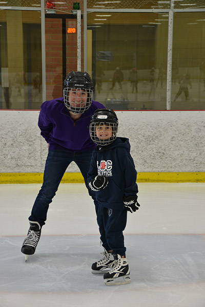
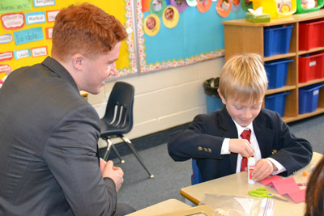
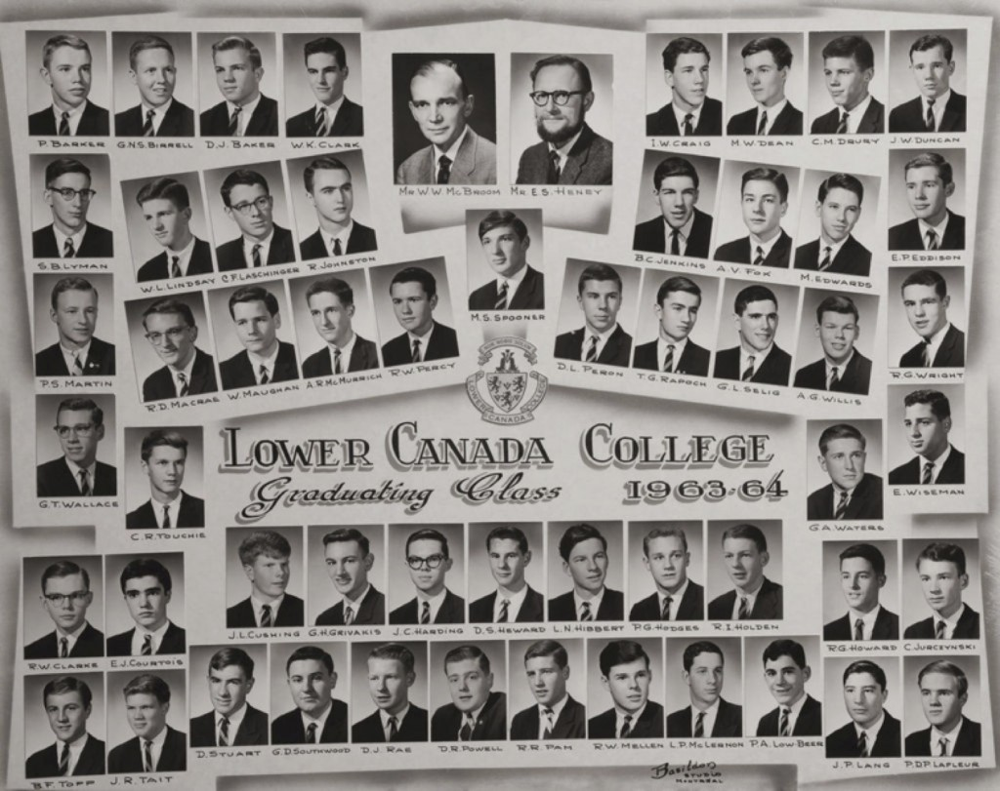
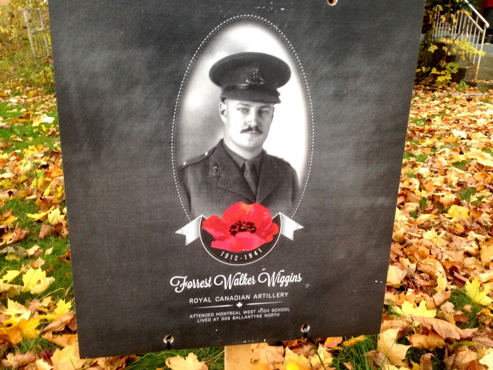

Crafts with Buddies

Behind the Scenes: The Pre-U Play
I had the chance to speak with the talented Sol Azrieli about the Pre-U play. For those unaware, the play is a comedy that reflects our lives as Pre-U students. The plot revolves around a character named Andrew Waxman and his social and academic escapades. Sol has made it explicit that Andrew is the only character based on a real person.
“From the onset,” he said, “I knew that the main character would be Andrew Waxman. And his best friend would be William Blake.”
The primary antagonist, whose ethnicity (and thereby, whose name) is not yet fixed, appeared in the very early drafts. Most of the other characters were then added as the story unfolded under the author’s skillful hand.
Leading the Pre-U Play
In accepting the role as Andrew Waxman/William Blake in the Pre-U play, I would like to take a moment to thank a few individuals who were really instrumental in my formation as a person. First and foremost, I’d like to thank the academy. Secondly, Thank you to my loving parents, two whom I accredit my literacy. Finally, I’d like to thank Arnold Schwarzenegger for instilling the love of acting in me from an early age. I am deeply humbled and honored to be acting in the Pre-U play, and to be working with my talented colleagues. This is a responsibility that I do not take lightly. I will strive to play these roles with the utmost accuracy to the fictional characters who are not based on real people, and to stay true to the vision of our director, playwright, and fellow Pre-U student, Sol Azrieli. I wish my fellow actors good luck as we embark on this journey, and invite the others to come help me build sets if they’d like to get involved behind the scenes. Hopefully, none of us actually breaks a leg before show night (except for Sol—he doesn’t really move much anyway); it will definitely be a show for the ages.
The Dichotomy of Interview Styles in the US and UK
Sitting at my first US university interview, I marvelled at the great disparity in the interview styles of American schools versus their British counterparts. This gulf between education systems is as deep and wide as the ocean that separates the two nations. Had I not felt nervous, I would have found the contrast comical.
Retrospectively, I should have been more astonished by my UK interviews. However, since I experienced them first, I had no preconceptions on what constitutes an interview. To their credit, Imperial College London conducted a session with me that qualified as an interview. Although the discussion was heavily academic, I enjoyed thinking out loud about how I would go about solving interesting scientific problems.
My interview with Cambridge was another matter; I would not call it an interview, but rather an interrogation.
2014 Winter Exam Schedule
Archived
The musings of an Emilie (Part II)

With December exams right around the corner, it comforts me to see this picture of just one (pre-co-ed) graduating class at LCC. To know that these (count ‘em) 54 boys went through what we’re going through right now, survived, and graduated, makes me feel like it’s all going to be okay (at least until winter break draws to a close, and we’re back in the thick of things). (There are a lot of parenthetical remarks in this post) (I should get back to studying) (You should too) ((((Good luck on your exams, you guys, and happy holidays))))
Footnote (it wouldn’t be an Emilie post without it): Daniel Wen is still the best lab partner to walk the face of the earth.
To Be Remembered
A few weeks back, I was sitting on the couch, alone, writing my Common App personal essay (for the fourth time) when I heard a knock at the door. Outside stood a middle aged man with a sign balanced in his arm, and a large hammer in the other. He was here to “put up the sign,” I overheard. I was, at that time, unaware of the small project my town had recently undertaken, to be revealed to you shortly. I later walked outside to inspect the sign that was now planted on my lawn, and found the following:

Unbeknownst to me, my town had made a small project of identifying all the buildings once homes to soldiers lost to both world wars.
In my personal case, the walls I now live in had once been residence to an artillery soldier by the name of Cpt. Forrest Walker Wiggins. From the short obituary written about him in the Montreal Gazette in 1941, we know that he attended what is now Royal West Academy, and went on to become a three season athlete at McGill. Inspired by his family before him, he dreamed of becoming a serviceman one day, and was granted this wish in 1935. He was among the first waves of soldiers deployed by the Canadian Forces, arriving in England on Christmas day of 1940. He was killed merely three months later, the cause of his death lost to the ages. He was twenty eight years old.
On Data
My computer died last Thursday. My friend. There was no procession, no wake. There was no obituary. My computer was an extension of myself. It was an extension of my psyche. It was the repository of all my mindless musings and iMessage conversations. It was where I kept my work. It was where I kept my music. It was where I kept screenshots, love-letters, songs, short stories. My computer was my brain. It was an appendage that extended from my fingertips and enabled me to tap into a record of my memories and emotions.
Now, it’s gone, and all I’m tapping into is an empty Pages document, forced to settle for this sorry excuse for word processing software now that my subscription to Microsoft Office has expired.
Why I’m Here: The musings of an Emilie
I’m a new student at LCC, hailing all the way from good ol’ Plattsburgh, New York, which, technically, means I’m from a foreign country. My older brother went through the Pre-University Program in 2012, and, because I suffer from middle child syndrome, I had my reservations about following in his footsteps. I came to Pre-U anyway, though, for me. I wanted to be immersed in the rigorous program that Lower Canada College offers their students. I love the atmosphere that’s created here; this school is basically Hogwarts, except the people are a lot friendlier, and the only scary teacher is actually Welsh. I came to LCC because I wanted a change of scenery. I wanted to wear business attire to school every day. But most of all, I came to LCC to be lab partners with Daniel Wen.